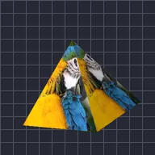

هرم

يضع الطبقة على أوجه هرم رباعي.
الإعدادات
| الإعداد | النوع | النطاق | الافتراضي |
|---|---|---|---|
| تدوير X | زاوية | من -3600° إلى 3600° | -15° |
| تدوير Y | زاوية | من -3600° إلى 3600° | -35° |
| تدوير Z | زاوية | من -3600° إلى 3600° | 0° |
| القاعدة | رقم | من 0.02 إلى 5 | 0.75 |
| الارتفاع | رقم | من 0.02 إلى 5 | 1.3 |
| الموضع | نقطة (X, Y) | من -5000 px إلى 5000 px | 0 px, 0 px |
| المقياس | رقم | من 0.05 إلى 10 | 1 |
| المنظور | رقم | من 0 إلى 1 | 0.5 |
| التظليل | رقم | من 0 إلى 1 | 0.6 |
| زاوية الضوء | زاوية | من -3600° إلى 3600° | 135° |
| اللمعان | رقم | من 0 إلى 1 | 0.3 |